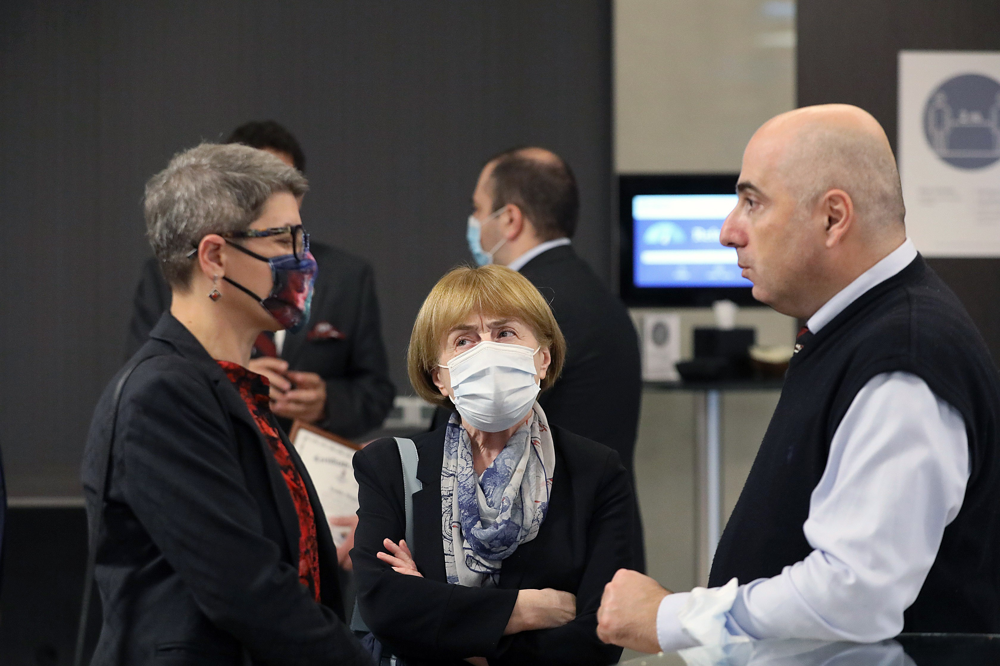

აკადემიური პერსონალის განვითარების პროგრამის დაჯილდოების ცერემონიალი
10 ნოემბერს სდსუ საქართველომ აკადემიური პერსონალის განვითარების პროგრამის (FADEPA) დაჯილდოების ცერემონიალი გამართა, სადაც სდსუ საქართველოს დეკანმა, ჰალილ გუვენმა და ათასწლეულის ფონდის უმაღლესი განათლების პროექტების დირექტორმა, ნოდარ სურგულაძემ პროგრამების პროფესორებს დამსახურების სერთიფიკატები გადასცეს.
სერთიფიკატები გადაეცათ პროფესორებს: ნანა დიხამინჯია (ილიას სახელმწიფო უნივერსიტეტი), ერეკლე მაღრაძე (ილიას სახელმწიფო უნივერსიტეტი), ანა გოლეთიანი (საქართველოს ტექნიკური უნივერსიტეტი) და მარინა სოსელია (თბილისის სახელმწიფო უნივერსიტეტი).
აკადემიური პერსონალის განვითარების აქტივობები სდსუ საქართველოს პროექტის მნიშვნელოვანი ნაწილია. ყოველ სემესტრში, პარტნიორი უნივერსიტეტების მიერ ნომინირებული აკადემიური პერსონალი სტუმრობს სან დიეგოს სახელმწიფო უნივერსიტეტის კამპუსს სან დიეგოში, კალიფორნიაში. აქ მათ საშუალება ეძლევათ გაეცნონ სდსუ-ს პროგრამებს, განივითარონ სწავლების მეთოდები, ლაბორატორიული უნარები, გაეცნონ სდსუ-ს შეფასების პრაქტიკას და ჩამოაყალიბონ პარტნიორული კოლაბორაციები სდსუ-ს აკადემიურ პერსონალთან, როგორც სწავლების, ასევე კვლევის მიმართულებით.
აკადემიური პერსონალის განვითარების პროგრამის ფარგლებში, პროფესორთა პირველი ნაკადი სან დიეგოს სახელმწიფო უნივერსიტეტში 2014 წელს გაემგზავრა. მას შემდეგ, სდსუ-ს კამპუსს ქართველ პროფესორთა 11 ნაკადი ეწვია. დღემდე, გადამზადების პროგრამაში მონაწილეობა მიიღო 101-მა პროფესორმა, რომელთაგან 73 უკვე ასწავლის სდსუ საქართველოს პროგრამებზე. 2023 წლამდე მთავარ კამპუსზე კიდევ ორი დამატებითი ნაკადის ვიზიტია დაგეგმილი.